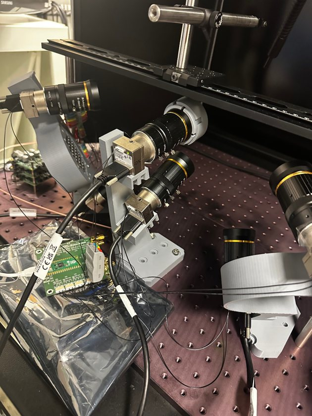

Multi-kilohertz insect wing tracking with event cameras
Tracking insect wingtips at kilohertz rates by combining a synchronized high-speed camera rig with an event camera. It's part of my research in the Lund Vision Group on 3D keypoint tracking and 3D flight-path estimation for insects.
- Synchronized five frame-based cameras with a microcontroller trigger, alongside an event camera.
- Generated pseudo-ground-truth 2D wingtip labels with a pretrained SLEAP pose-estimation model.
- Aligned the event data with the keypoint labels in time, and trained a lightweight network to predict wingtip coordinates directly from events.
- The model recovers high-frequency wing-motion patterns from event data. This lays the groundwork for low-latency, real-time, closed-loop tracking.
- Event cameras
- SLEAP
- Multi-camera sync
- Sensor fusion
- Keypoint regression